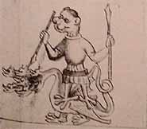

|
|
 |
|
| El Picatrix se presenta como un manual de magia
simpática y astral. Escrito en árabe sin duda en el siglo XII, guarda
el secreto de los talismanes tal y como lo practicaban los Árabes
de Harran.
Debemos la traducción latina de la obra a Alfonso el Sabio. Se beneficia
de un gran resplandor en el Renacimiento y el texto ejerce
una influencia muy importante sobre Pedro de Abano, Marsile
Ficin y Henri Corneille Agrippa.
Pic de la Mirandola poseía incluso un ejemplar en su biblioteca.
Más tarde fue cayendo en el olvido. |
|
|
|
|
Perfecto manual del mago, el Picatrix es uno
de los mayores y más completos tratados de magia. Desvela todo
tipo de fórmulas tales como : " Cómo destruir una ciudad con el
Rayo del Silencio ", " cómo influenciar a los hombres a distancia
". Presenta también una lista de imágenes mágicas con su modo
de empleo. Trata de las simpatías entre las plantas, las piedras,
los animales, los planetas y sobre la manera de utilizarlos
para fines mágicos. Evoca también el poder de las imágenes mágicas,
en el que presenta a Hermes Trismegisto como el inventor. Los diversos
talismanes y procedimientos descritos tienen fines tales como curar
enfermedades, vivir durante mucho tiempo, tener éxito, evadirse
de la prisión, vencer a los enemigos, atraer el amor de otra persona…
|
|
 |
|
 |
| Según Ghâyat Al-Hakim , el cosmos
se compone de tres mundos :
la materia, el espíritu y el intelecto. Toda la magia
del Picatrix
consiste en captar y después guiar el influjo del espíritu
de un astro hacia la materia por medio de talismanes. Es la razón
por la que la obra revela el procedimiento a seguir : grabar las
imágenes de las estrellas en el soporte adaptado.
El libro mágico se presenta en forma de 4 libros :
|
| • |
Los libros I y II
enuncian oraciones y promesas de revelaciones profundas mezcladas
a un enfoque filosófico relativo a la disposición de la naturaleza.
En los mismos se encuentran el arte de la fabricación talismánica
que necesita conocimientos profundos en astronomía, música,
metafísica. El autor redacta una lista de imágenes que pueden
figurar en los talismanes correspondiente a los planetas y
a los 36 decanatos unidos en torno a su signo zodiacal respectivo. |
|
|
|
|
|
|
Para
los tres decanatos de aries se encontrarán por tanto las imágenes
siguientes :
|
|
|
|
|
|
" En la primera cara de aries
sube un hombre con los ojos rojos, una barba larga y espesa
tapada con tela de lino blanco, con grandes gestos al andar,
ceñido en un fajín rojo, de pie y con un sólo pie como si mirara
lo que viene ante sí.
En la segunda cara de aries sube una mujer con chal vestida de rojo,
también con un sólo pie y por su figura se parece bastante a un
caballo animado y enfurecido. Busca a su hijo, ropa y adornos y
a su hija.
|
 |
|
|

|
|
En la tercera cara de aries sube un
hombre de color blanco y rojo con cabello rojo, parece estar en
cólera y muy inquieto, sujetando en la mano derecha una espada y
en la izquierda un cuerno y vestido de rojo. Es un docto, perfecto
en ciencia y un hábil maestro en el arte del trabajo de
la herrería. Desea el bien y no desea ningún daño. "
|
|
| |
|
|
|
|
Cada
uno de los siete planetas posee también una lista de imágenes que
le es propia. El conjunto de descripciones va acompañada al final
de la obra
por una iconografía muy extraña a grabar en los talismanes según
el astro que se desea invocar.
|
|
|
| |
|
 |
|
 |
|
 |
|
| |
Una imagen del sol |
Una imagen de Júpiter |
Una imagen de Venus |
|
|
| |
| |
|
| • |
El libro III trata
de las piedras, de las plantas, los animales y otros elementos
que |
|
corresponden a los diferentes planetas y
signos a fin de saber cómo invocar a los espíritus
de los planetas por su nombre y su poder. |
|
|
| • |
El libro IV está dedicado
a las fumigaciones y a las oraciones planetarias. |
|
|
|
| |
|
|
Más
concretamente, el Picatrix desvela todo tipo de fórmulas contra
las enfermedades o para atraer influencias benéficas.
|
|
|
| |
|
| • |
Para destruir a un enemigo
: " Realizar dos imágenes, una a la hora del Sol, con
el León ascendente y la Luna decreciente del ángulo del ascendente,
la otra en la hora de Marte bajo cáncer, con el ascendente
en Marte y Luna decreciente. Realice esta imagen a semejanza
de un hombre que lucha contra otro, enterrándola luego a la
hora de Marte cuando la primera cara de aries suba. Una vez
hecho esto, podrá vencer a sus enemigos de cualquiera de las
maneras. " |
| |
|
| • |
Para curar una herida o una
úlcera : " Realizar esta imagen de un escorpión en una
piedra de bezoar en la hora de la Luna y cuando ésta esté
en la segunda cara de Escorpión y cuando Leo, Tauro
o Acuario sean ascendentes engarzar la piedra en un anillo
de oro y sellar el incienso ablandado en la mencionada
constelación y dar a beber al herido. Estos sellos vencerán
el incienso y en seguida se vendará la úlcera. " |
| |
|
| • |
Para multiplicar las cosechas
y las plantas : " Realizar las imágenes en una lámina
de plata con un hombre sentado y en torno a él las cosechas,
árboles y plantas y que sea durante la Luna yendo del
Sol hacia Saturno y se entierra allí en el lugar que
se desea. Todas las plantas se encontrarán y todas las simientes
brotarán de forma rápida sin ningún daño causado ni por las
bestias, ni los pájaros, ni tampoco la tempestad ". |
| |
|
|
|
|
| |